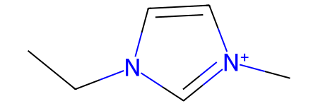
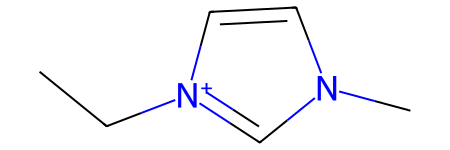

ILThermoPy Cookbook
Data snapshot — 16 October 2026This cookbook accompanies ILThermoPy 1.1.3 and its compound/SMILES data updated on 16 October 2026 (ILThermo 2.0 reports its last database update as 22 July 2026). ILThermo is a live service: subsequent database updates may change property keys, compound and entry IDs, search results, row counts, and individual values for the same requests. The outputs illustrate the workflow; rerun the cells to obtain current results and check the database status withilt.CheckLastUpdate().
ILThermo 2.0 is a curated NIST database of experimental physicochemical properties of ionic liquids and related systems. This cookbook demonstrates accessing its records with the ILThermoPy Python package.
Basic search
ILThermo 2.0 supports searches by compound name, CAS registry number or chemical formula, the number of components, measured property, and publication metadata. See the arguments of ilt.Search for details:
[1]:
import ilthermopy as ilt
help(ilt.Search)
Help on function Search in module ilthermopy.search:
Search(compound: Optional[str] = None, n_compounds: Literal[None, 1, 2, 3] = None, prop: Optional[str] = None, prop_key: Optional[str] = None, year: Optional[int] = None, author: Optional[str] = None, keywords: Optional[str] = None) -> pandas.core.frame.DataFrame
Runs ILThermo search and returns results as a dataframe
Arguments:
compound: chemical formula, CAS registry number, or name (part or full)
n_compounds: number of mixture compounds
prop: name of physico-chemical property, only used if prop_key is not specified
prop_key: key of physico-chemical property (view available via GetPropertyList)
year: publication year
author: author's last name
keywords: keywords presumably specified in paper's title
Returns:
dataframe containing main info on found entries
[2]:
# search individual compounds published in 2004
df = ilt.Search(n_compounds = 1, year = 2004)
df
[2]:
| id | reference | property | phases | num_phases | num_components | num_data_points | cmp1 | cmp1_id | cmp1_smiles | cmp2 | cmp2_id | cmp2_smiles | cmp3 | cmp3_id | cmp3_smiles | |
|---|---|---|---|---|---|---|---|---|---|---|---|---|---|---|---|---|
| 0 | vffQK | Kabo et al. (2004) | Heat capacity at constant pressure | Liquid | 1 | 1 | 1528 | 1-butyl-3-methylimidazolium hexafluorophosphate | ABChJv | CCCC[n+]1ccn(C)c1.F[P-](F)(F)(F)(F)F | None | None | None | None | None | None |
| 1 | aNLkc | Kabo et al. (2004) | Heat capacity at vapor saturation pressure | Crystal;Gas | 2 | 1 | 137 | 1-butyl-3-methylimidazolium hexafluorophosphate | ABChJv | CCCC[n+]1ccn(C)c1.F[P-](F)(F)(F)(F)F | None | None | None | None | None | None |
| 2 | bNHLG | Kabo et al. (2004) | Heat capacity at vapor saturation pressure | Glass;Gas | 2 | 1 | 111 | 1-butyl-3-methylimidazolium hexafluorophosphate | ABChJv | CCCC[n+]1ccn(C)c1.F[P-](F)(F)(F)(F)F | None | None | None | None | None | None |
| 3 | HzjQF | Sun et al. (2004) | Heat capacity at constant pressure | Crystal | 1 | 1 | 111 | 4,6-dimethyl-N-phenylpyrimidin-2-amine dodecan... | ABYrQW | CCCCCCCCCCCC(=O)[O-].Cc1cc(C)nc(Nc2ccccc2)[nH+]1 | None | None | None | None | None | None |
| 4 | sBpKf | Kabo et al. (2004) | Heat capacity at vapor saturation pressure | Liquid;Gas | 2 | 1 | 42 | 1-butyl-3-methylimidazolium hexafluorophosphate | ABChJv | CCCC[n+]1ccn(C)c1.F[P-](F)(F)(F)(F)F | None | None | None | None | None | None |
| ... | ... | ... | ... | ... | ... | ... | ... | ... | ... | ... | ... | ... | ... | ... | ... | ... |
| 272 | CymfL | Zhao et al. (2004b) | Viscosity | Liquid | 1 | 1 | 1 | 1-(4-cyanobutyl)-3-methylimidazolium tetrafluo... | AAwOgS | Cn1cc[n+](CCCCC#N)c1.F[B-](F)(F)F | None | None | None | None | None | None |
| 273 | onFYh | Zhao et al. (2004b) | Density | Liquid | 1 | 1 | 1 | 1-butyl-3-methylimidazolium hexafluorophosphate | ABChJv | CCCC[n+]1ccn(C)c1.F[P-](F)(F)(F)(F)F | None | None | None | None | None | None |
| 274 | NaZFE | Zhao et al. (2004b) | Viscosity | Liquid | 1 | 1 | 1 | 1-butyl-3-methylimidazolium hexafluorophosphate | ABChJv | CCCC[n+]1ccn(C)c1.F[P-](F)(F)(F)(F)F | None | None | None | None | None | None |
| 275 | YbIco | Zhao et al. (2004b) | Density | Liquid | 1 | 1 | 1 | 1-butyl-3-methylimidazolium tetrafluoroborate | AArYBF | CCCC[n+]1ccn(C)c1.F[B-](F)(F)F | None | None | None | None | None | None |
| 276 | HwTsD | Zhao et al. (2004b) | Equilibrium temperature | Crystal;Liquid | 2 | 1 | 1 | 3-(3-cyanopropyl)-1-methylimidazolium chloride | AAjkls | CCCC[n+]1cccc(C)c1.[Cl-] | None | None | None | None | None | None |
277 rows × 16 columns
The result is a pandas DataFrame with one row per experimental data entry:
id: ILThermo data-entry identifier, used by
ilt.GetEntry();reference: short citation of the source publication;
property, phases: measured property and phases;
num_phases, num_components, num_data_points: counts for the entry;
cmp1, cmp1_id, cmp1_smiles (and similarly for components 2 and 3): the compound name, ILThermo compound identifier, and stored SMILES.
Properties
You can search by a property name or its internal ILThermo key. The names and keys available in the current database can be inspected with ilt.ShowPropertyList():
[3]:
ilt.ShowPropertyList()
# Activity, fugacity, and osmotic properties
OeGx: Activity
IzuI: Mean ionic activity coefficient of component
ATdF: Osmotic coefficient
# Composition at phase equilibrium
xcJP: Composition at phase equilibrium
XSWH: Eutectic composition
lwkH: Henry's Law constant
AqYC: Tieline
aEcx: Upper consolute composition
# Critical properties
lsOT: Critical pressure
WuhL: Critical temperature
xUze: Upper consolute pressure
NMMC: Upper consolute temperature
# Excess, partial, and apparent energetic properties
TtDG: Apparent enthalpy
aJDm: Apparent isobaric molar heat capacity
mcIy: Enthalpy of dilution per amount of solute
aREM: Enthalpy of mixing of a binary solvent with component
iQPY: Excess enthalpy
iOPb: Integral enthalpy of solution
TMtf: Partial molar enthalpy
# Heat capacity and derived properties
KfbC: Enthalpy
jFrV: Enthalpy function {H(T)-H(0)}/T
LoTK: Entropy
Qneg: Heat capacity at constant pressure
MuWM: Heat capacity at constant volume
FXxs: Heat capacity at vapor saturation pressure
# Phase transition properties
DCQw: Enthalpy of transition or fusion
KwJt: Enthalpy of vaporization or sublimation
JniP: Equilibrium temperature
HDIB: Eutectic temperature
YQCb: Monotectic temperature
LPuZ: Normal melting temperature
# Refraction, surface tension, and speed of sound
IzOV: Interfacial tension
OMVT: Molar refraction (Na D-line)
RbfA: Optical rotation (Na D-line)
FoWP: Refractive index
TGKW: Relative permittivity
JYHK: Speed of sound
CTsx: Surface tension liquid-gas
# Transport properties
UIrH: Binary diffusion coefficient
LCor: Electrical conductivity
cMuo: Molar conductivity of component
ySQn: Self diffusion coefficient
rSEB: Thermal conductivity
qRpR: Thermal diffusivity
CweK: Tracer diffusion coefficient
tplC: Viscosity
# Vapor pressure, boiling temperature, and azeotropic T & P
gGNp: Equilibrium pressure
zmIG: Vapor or sublimation pressure
# Volumetric properties
QoVJ: Apparent molar volume
jBwV: Density
VYqQ: Excess volume
NEyp: Isobaric coefficient of volume expansion
aSWJ: Isothermal compressibility
TGTi: Partial molar volume
The property names and internal keys can change between ILThermo database versions. The prop argument of ilt.Search() resolves the name against the current property list, while prop_key passes a specific internal key. Prefer prop unless you explicitly need the key. An unknown property name raises ValueError.
For programmatic access to the current names and keys, use ilt.PropertyList():
[4]:
plist = ilt.PropertyList()
help(plist)
Help on PropertyList in module ilthermopy.data_structs object:
class PropertyList(builtins.object)
| Contains info on available physico-chemical properties and their API keys
|
| Attributes:
| properties (dict): two-level organized dictionary, interconnecting property
| types, properties, and their API keys
| key2prop (dict): maps API keys to property names
| prop2key (dict): maps property names to their API keys
|
| Methods defined here:
|
| Show(self) -> None
| Prints list of properties available in ILThermo 2.0 database
| formatted as api_key: property_name
|
| __init__(self)
| Initialize self. See help(type(self)) for accurate signature.
|
| ----------------------------------------------------------------------
| Data descriptors defined here:
|
| __dict__
| dictionary for instance variables (if defined)
|
| __weakref__
| list of weak references to the object (if defined)
[5]:
prop_name = 'Activity'
prop_key = plist.prop2key.get(prop_name, None)
print(prop_key)
OeGx
However, in most cases you do not need this functionality since the ilt.Search function supports the prop argument.
Retrieving data
To retrieve the full experimental measurements for a search result, pass its entry identifier to ilt.GetEntry():
[6]:
# Find entries for two-component systems published in 2004
df = ilt.Search(n_compounds=2, year=2004)
# Retrieve the first result (one API request)
entry = ilt.GetEntry(df['id'].iloc[0])
entry
[6]:
Entry(id='srPOo', ref=Reference(full='Rebelo, L. P. N.; Najdanovic-Visak, V.; Visak, Z. P.; Nunes da Ponte, M.; Szydlowski, J.; Cerdeirina, C. A.; Troncoso, J.; Romani, L.; Esperanca, J. M. S. S.; Guedes, H. J. R.; de Sousa, H. C. (2004) Green Chem. 6(8), 369-381.'), property='Excess volume', property_type='Volumetric properties', phases=['Liquid'], components=[Compound(id='AADYJk', name='water', smiles='O'), Compound(id='AArYBF', name='1-butyl-3-methylimidazolium tetrafluoroborate', smiles='CCCC[n+]1ccn(C)c1.F[B-](F)(F)F')], num_data_points=185)
Entry object contains detailed information on the data entry, including:
id: data entry ID;
ref: reference to the source article;
property, property_type: measured property and its type;
phases: list of system’s phases;
components: list of system’s components;
num_phases, num_components, num_data_points: number of system’s components and phases, and number of measured data points;
expmeth: experimental method used to obtain the physchemical data;
solvent: solvent used in the experiment;
constraints: list of experimental constraints;
data: dataframe containing measured data;
header: full column names to the data, containing info on the measured property, measurement units, component, and phase;
footnotes: notes to the data;
response: original response.
Let’s illustrate the main attributes. Reference contains reference itself and the article’s title:
[7]:
entry.ref.full, entry.ref.title
[7]:
('Rebelo, L. P. N.; Najdanovic-Visak, V.; Visak, Z. P.; Nunes da Ponte, M.; Szydlowski, J.; Cerdeirina, C. A.; Troncoso, J.; Romani, L.; Esperanca, J. M. S. S.; Guedes, H. J. R.; de Sousa, H. C. (2004) Green Chem. 6(8), 369-381.',
'A detailed thermodynamic analysis of [C4mim][BF4] + water as a case study to model ionic liquid aqueous solutions')
Each component is a Compound object and contains the following fields:
id: compound id;
name: compound name;
formula: chemical formula;
smiles: compound SMILES;
smiles_error: if compounds SMILES was not retrieved, this field describes the reason;
sample: dictionary containing info on compound’s source, purity, etc.;
mw: molar weight of the compound, g/mol.
[8]:
cmp1 = entry.components[0]
cmp1.id, cmp1.name, cmp1.formula, cmp1.smiles, cmp1.smiles_error, cmp1.sample, cmp1.mw
[8]:
('AADYJk',
'water',
'H2 O',
'O',
None,
{'Source': 'commercial source',
'Purification': 'estimated by the compiler',
'Purity': '99.8 mass %(fractional distillation)'},
18.02)
The data attribute is a DataFrame containing the measured quantities. Its columns have short labels (V1, V2, …); when a measurement uncertainty is present, the corresponding column uses a d prefix (e.g. V4 and dV4):
[9]:
entry.data
[9]:
| V1 | V2 | V3 | V4 | dV4 | |
|---|---|---|---|---|---|
| 0 | 100.0 | 0.0040 | 278.15 | -3.600000e-08 | 1.000000e-08 |
| 1 | 100.0 | 0.0040 | 283.15 | -3.350000e-08 | 1.000000e-08 |
| 2 | 100.0 | 0.0040 | 288.15 | -3.070000e-08 | 1.000000e-08 |
| 3 | 100.0 | 0.0040 | 293.15 | -2.830000e-08 | 1.000000e-08 |
| 4 | 100.0 | 0.0040 | 298.15 | -2.580000e-08 | 1.000000e-08 |
| ... | ... | ... | ... | ... | ... |
| 180 | 60000.0 | 0.5905 | 298.15 | 4.620000e-07 | 1.100000e-08 |
| 181 | 60000.0 | 0.5905 | 303.15 | 4.550000e-07 | 1.100000e-08 |
| 182 | 60000.0 | 0.5905 | 313.15 | 4.510000e-07 | 1.100000e-08 |
| 183 | 60000.0 | 0.5905 | 323.15 | 5.420000e-07 | 1.200000e-08 |
| 184 | 60000.0 | 0.5905 | 333.15 | 5.830000e-07 | 1.200000e-08 |
185 rows × 5 columns
header field contains full names of the corresponding columns, including measured property, its measurement unit, and optionally compound and phase:
[10]:
entry.header
[10]:
{'V1': 'Pressure, kPa',
'V2': 'Mole fraction of 1-butyl-3-methylimidazolium tetrafluoroborate => Liquid',
'V3': 'Temperature, K',
'V4': 'Excess volume, m<SUP>3</SUP>/mol => Liquid',
'dV4': 'Error of excess volume, m<SUP>3</SUP>/mol => Liquid'}
Combining entries from different experiments may require harmonizing variables, units, compositions, and constraints. This example focuses on retrieving and inspecting the original records.
Substructure search
Update status
ILThermoPy ships a table relating ILThermo compound identifiers and names to curated SMILES strings. It looks up structures by ID first, with a name-based fallback. Because ILThermo updates may reassign compound identifiers or alter names, it is useful to check that the local structure snapshot corresponds to the live database. The next cell runs that check:
[11]:
ilt.CheckLastUpdate()
ILThermo 2.0 database was last updated on July 22, 2026
ilthermopy package was last updated on October 16, 2026
ilthermopy package is up-to-date
Substructure search
For an example, find compounds containing a positively charged guanidinium-like N–C(N)–N motif. This includes N-substituted derivatives, not just the unsubstituted guanidinium ion. First retrieve a table of available experimental entries:
[12]:
df = ilt.GetAllEntries()
df
[12]:
| id | reference | property | phases | num_phases | num_components | num_data_points | cmp1 | cmp1_id | cmp1_smiles | cmp2 | cmp2_id | cmp2_smiles | cmp3 | cmp3_id | cmp3_smiles | |
|---|---|---|---|---|---|---|---|---|---|---|---|---|---|---|---|---|
| 0 | vffQK | Kabo et al. (2004) | Heat capacity at constant pressure | Liquid | 1 | 1 | 1528 | 1-butyl-3-methylimidazolium hexafluorophosphate | ABChJv | CCCC[n+]1ccn(C)c1.F[P-](F)(F)(F)(F)F | None | None | None | None | None | None |
| 1 | cFdQS | Strechan et al. (2008a) | Heat capacity at vapor saturation pressure | Crystal 2;Gas | 2 | 1 | 613 | 1-butyl-3-methylimidazolium trifluoroacetate | AAwaEi | CCCC[n+]1ccn(C)c1.O=C([O-])C(F)(F)F | None | None | None | None | None | None |
| 2 | eOKLZ | Safarov et al. (2021b) | Viscosity | Liquid | 1 | 1 | 500 | 1-ethyl-3-methylimidazolium dicyanamide | AAiEIE | CC[n+]1ccn(C)c1.N#C[N-]C#N | None | None | None | None | None | None |
| 3 | UkHsx | Polikhronidi et al. (2014) | Heat capacity at constant pressure | Liquid | 1 | 1 | 422 | 1-hexyl-3-methylimidazolium bis[(trifluorometh... | ABiCtA | CCCCCC[n+]1ccn(C)c1.O=S(=O)([N-]S(=O)(=O)C(F)(... | None | None | None | None | None | None |
| 4 | BvazU | Safarov et al. (2018c) | Viscosity | Liquid | 1 | 1 | 394 | 1-octyl-3-methylimidazolium hexafluorophosphate | ABNWoR | CCCCCCCC[n+]1ccn(C)c1.F[P-](F)(F)(F)(F)F | None | None | None | None | None | None |
| ... | ... | ... | ... | ... | ... | ... | ... | ... | ... | ... | ... | ... | ... | ... | ... | ... |
| 54204 | kxodn | Zhao et al. (2010a) | Composition at phase equilibrium | Liquid;Gas | 2 | 3 | 1 | carbon dioxide | AAIYzl | O=C=O | water | AADYJk | O | 2-hydroxy-N-(2-hydroxyethyl)-N-methylethanamin... | AAdwMT | C[NH+](CCO)CCO.[Cl-] |
| 54205 | WDULW | Zhao et al. (2010a) | Composition at phase equilibrium | Liquid;Gas | 2 | 3 | 1 | carbon dioxide | AAIYzl | O=C=O | water | AADYJk | O | 2-hydroxy-N-(2-hydroxyethyl)-N-methylethanamin... | AAnpCD | C[NH+](CCO)CCO.F[B-](F)(F)F |
| 54206 | trauR | Zhao et al. (2010a) | Composition at phase equilibrium | Liquid;Gas | 2 | 3 | 1 | carbon dioxide | AAIYzl | O=C=O | water | AADYJk | O | 2-hydroxyethanaminium tetrafluoroborate | AAcgPC | F[B-](F)(F)F.[NH3+]CCO |
| 54207 | YtOdr | Zhao et al. (2010a) | Composition at phase equilibrium | Liquid;Gas | 2 | 3 | 1 | carbon dioxide | AAIYzl | O=C=O | water | AADYJk | O | 1-butyl-3-methylimidazolium tetrafluoroborate | AArYBF | CCCC[n+]1ccn(C)c1.F[B-](F)(F)F |
| 54208 | xKyGC | Zhao et al. (2010a) | Composition at phase equilibrium | Liquid;Gas | 2 | 3 | 1 | triethanolamine | AAcjhv | OCCN(CCO)CCO | carbon dioxide | AAIYzl | O=C=O | 1-butyl-3-methylimidazolium tetrafluoroborate | AArYBF | CCCC[n+]1ccn(C)c1.F[B-](F)(F)F |
54209 rows × 16 columns
Next we get pre-stored list of all ILThermo compounds:
[13]:
cmps = ilt.GetSavedCompounds().data
cmps
[13]:
| id | name | smiles | |
|---|---|---|---|
| 0 | AAAUNw | hydrogen (normal) | [HH] |
| 1 | AAAoxC | helium | [He] |
| 2 | AADEqZ | methane | C |
| 3 | AADOHa | ammonia | N |
| 4 | AADYzl | water | O |
| ... | ... | ... | ... |
| 3757 | AGItKJ | hexane-1,6-diylbis(trioctylphosphonium) docusate | S(=O)(=O)([O-])C(C(=O)OCC(CCCC)CC)CC(=O)OCC(CC... |
| 3758 | AGTiTJ | decane-1,10-diylbis(trioctylphosphonium) docusate | S(=O)(=O)([O-])C(C(=O)OCC(CCCC)CC)CC(=O)OCC(CC... |
| 3759 | AGbVrp | 1,1'-(ethane-1,2-diyl)bis(3-(3-((3,3,4,4,5,5,6... | FC(F)(F)C(F)(F)C(F)(F)C(F)(F)C(F)(F)C(F)(F)C(F... |
| 3760 | AGmPfb | tris(trihexyltetradecylphosphonium) hexachloro... | CCCCCCCCCCCCCC[P+](CCCCCC)(CCCCCC)CCCCCC.CCCCC... |
| 3761 | AGwzUX | 1,1'-(decane-1,10-diyl)bis(3-(3-((3,3,4,4,5,5,... | FC(F)(F)C(F)(F)C(F)(F)C(F)(F)C(F)(F)C(F)(F)C(F... |
3762 rows × 3 columns
Use RDKit to identify the compounds containing that substructure. The SMARTS pattern below matches the charged nitrogen attached to a carbon bonded to three nitrogens; it is intentionally broad and may include related cationic amidines:
[14]:
from rdkit import Chem
mols = [Chem.MolFromSmiles(smi) for smi in cmps.smiles]
pat = Chem.MolFromSmarts('[N+]~[CX3](~N)~N')
matches = [mol is not None and mol.HasSubstructMatch(pat) for mol in mols]
cmps = cmps.loc[matches]
cmps
[14]:
| id | name | smiles | |
|---|---|---|---|
| 689 | AAfsny | N,N-dimethylimidodicarbonimidic diamide hydrochloride | CN(C)C(=[NH2+])NC(=N)N.[Cl-] |
| 1749 | ABDfwu | (2-ethoxyethyl)pentamethylguanidinium tetrafluoroborate | F[B-](F)(F)F.C(C)OCCN(C(N(C)C)=[N+](C)C)C |
| 1789 | ABEgAX | dibutyltetramethylguanidinium dicyanamide | CCCC[N+](CCCC)=C(N(C)C)N(C)C.N#C[N-]C#N |
| 1792 | ABEnPU | 5,7-dimethyl-1,5,7-triazabicyclo[4.4.0]dec-5-en-5-ium iodide | [I-].C[N+]=1CCCN2CCCN(C12)C |
| 1815 | ABFKhd | N-(bis(dimethylamino)methylene)-N-ethylethanaminium ethyl sulfate | S(=O)(=O)(OCC)[O-].CN(C)C(=[N+](CC)CC)N(C)C |
| ... | ... | ... | ... |
| 3398 | ACIAUR | (2-ethoxyethyl)pentamethylguanidinium bis(pentafluoroethylsulfonyl)amide | FC(C(F)(F)F)(S(=O)(=O)[N-]S(=O)(=O)C(C(F)(F)F)(F)F)F.C(C)OCCN(C(N(C)C)=[N+](C)C)C |
| 3538 | ACWOjJ | dimethyl di-octadecyl dimethylguanidinium chloride | [Cl-].CN(C(N(CCCCCCCCCCCCCCCCCC)C)=[N+](C)C)CCCCCCCCCCCCCCCCCC |
| 3567 | ACcIvq | dimethyl di-octadecyl dimethylguanidinium dicyanamide | CCCCCCCCCCCCCCCCCCN(C)C(N(C)CCCCCCCCCCCCCCCCCC)=[N+](C)C.N#C[N-]C#N |
| 3655 | ADHtyv | diethyl bis(2,3-dibromo-2-methylpropyl) dimethylguanidinium bis(trifluoromethylsulfonyl)imide | [N-](S(=O)(=O)C(F)(F)F)S(=O)(=O)C(F)(F)F.C(C)N(C(N(CC(CBr)(Br)C)CC)=[N+](C)C)CC(CBr)(C)Br |
| 3696 | ADYrEe | dimethyl di-octadecyl dimethylguanidinium tetraphenylborate | CCCCCCCCCCCCCCCCCCN(C)C(N(C)CCCCCCCCCCCCCCCCCC)=[N+](C)C.c1ccc([B-](c2ccccc2)(c2ccccc2)c2ccccc2)cc1 |
38 rows × 3 columns
Now select experimental entries involving at least one matching compound. The exact entries depend on the current ILThermo database:
[ ]:
sub = df.loc[
df.cmp1_id.isin(cmps.id)
| df.cmp2_id.isin(cmps.id)
| df.cmp3_id.isin(cmps.id)
]
sub.head(10)
Resonance
Sometimes, substructure search will not work as expected unless resonance was considered. This can be demonstrated on non-symmetrical imidazolium cations:
[16]:
mol1 = Chem.MolFromSmiles('C[n+]1cc[n](CC)c1')
mol2 = Chem.MolFromSmiles('C[n]1cc[n+](CC)c1')
mol1
[16]:

[17]:
mol2
[17]:

[18]:
mol1.HasSubstructMatch(mol2)
[18]:
False
These two SMILES encode equivalent resonance forms, but they are represented as different molecular graphs. RDKit’s default canonical SMILES generation does not necessarily collapse such resonance representations:
[19]:
Chem.MolToSmiles(mol1), Chem.MolToSmiles(mol2)
[19]:
('CCn1cc[n+](C)c1', 'CC[n+]1ccn(C)c1')
There are two practical ways to make such searches less sensitive to resonance representations:
Use more general SMARTS patterns, e.g. by avoiding a fixed charge or bond order when chemically appropriate (see the Daylight SMARTS reference).
Enumerate resonance structures with RDKit’s
ResonanceMolSupplierand compare the query against those alternatives.